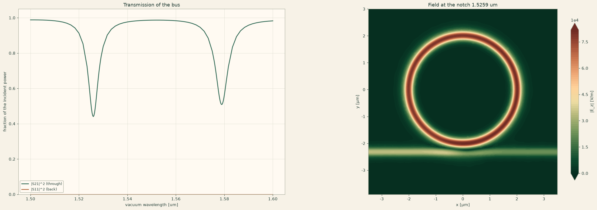
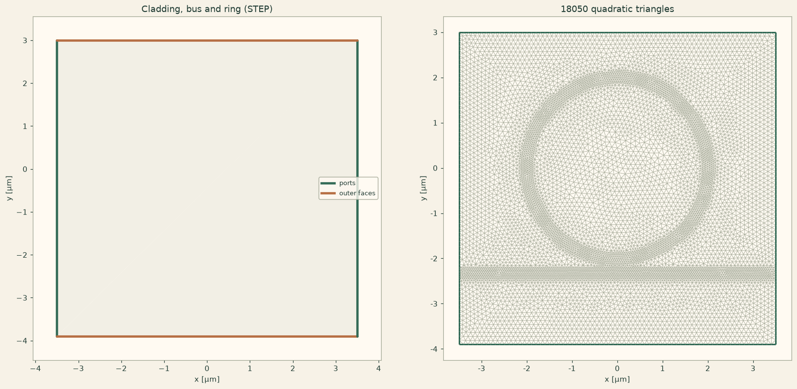

Docs › Examples › Optical ring resonator notch filter
Wave optics · 2D
Optical ring resonator notch filter
A weakly absorbing silicon ring of 2 um radius next to a straight silicon waveguide removes narrow bands from the transmitted light between 1.50 and 1.60 um.
Run locally with OneSimulation. The example downloads are free. Running them requires an activated runtime. Runtime Alpha 0.2.1a7 · CPython 3.13 on macOS (Apple Silicon), Ubuntu 22.04 (x86-64), and Windows x64. Installation and activation · View pilot plans. Scope of the reference checks.

What it computes
OneSimulation solves E_z on the section read from STEP files drawn in micrometres; the mesh is scaled to metres and the model is solved in SI units. Waveguide ports compute the modes of their lines through the absorbing layers and feed the guided mode; a coarse wavelength sweep finds the notches, which are then resolved finely. The script that builds the STEP files comes with the notebook.
What it checks
The guided mode of the port lines matches the exact slab relation to 8e-5 in the effective index; the two notches at 1.5259 and 1.5788 um (transmission 0.44 and 0.51) lie 52.9 nm apart against 51.6 to 55.3 nm from the group index of the straight guide; transmission, reflection, absorption in the ring and the Poynting flux into the absorbing layers add up to 1 within 2e-4.
Geometry
The notebook starts at the import of the CAD files ring_resonator_notch_filter.step, ring_resonator_notch_filter_bus.step, ring_resonator_notch_filter_ring.step: STEP (AP242), readable by any CAD program, with the names of the faces that the boundary conditions use. Put them next to the notebook.

The geometry script
The script ring_resonator_notch_filter_geometry.py builds the geometry with the CAD objects of OneSimulation and writes the files. Change a dimension there, run it, and run the notebook again.
"""Geometry of the OneSimulation example "Optical ring resonator notch filter".
Builds, as thin plates with the CAD objects of OneSimulation and in micrometres, a section 7 um wide
and 6.9 um high of silica cladding (ring_resonator_notch_filter.step; x_min and x_max are the ports,
y_min and y_max the outer faces behind the absorbing layers), a straight silicon waveguide 0.24 um
wide along it (ring_resonator_notch_filter_bus.step) and a silicon ring of 2 um centre radius and
the same width 0.08 um above it (ring_resonator_notch_filter_ring.step).
"""
from onesim.cad.d3 import AnnularCylinder, Box
width, height, core, radius, gap, depth, bottom = 7.0, 6.9, 0.24, 2.0, 0.08, 0.1, -3.9
centre = -(radius + core + gap)
Box(length=width, width=height, height=depth, origin=(-width / 2, bottom, 0)).save(
"ring_resonator_notch_filter.step"
)
Box(
length=width, width=core, height=depth, origin=(-width / 2, centre - core / 2, 0)
).save("ring_resonator_notch_filter_bus.step")
AnnularCylinder(
inner_radius=radius - core / 2, outer_radius=radius + core / 2, length=depth
).save("ring_resonator_notch_filter_ring.step")The notebook
The complete notebook, cell by cell. Run it to produce the figures and the comparison printout.
The simplest ring resonator is a straight waveguide (the bus) and a ring waveguide next to it. Their evanescent fields overlap in the gap, so part of the light in the bus crosses into the ring. After one round trip it meets the bus again; when the round trip \(L=2\pi R\) holds a whole number of guided wavelengths, \(n_{eff}L=m\lambda\), the light in the ring adds up in phase, the ring stores a large field and the light leaving along the bus interferes destructively: a notch in the transmission - provided the ring loses some light on each round trip: a lossless ring with one bus only delays the light and passes all of it (an all-pass filter). The notch is deepest when the loss per round trip equals the light coupled out (critical coupling). The ring here absorbs weakly, with an extinction coefficient of \(10^{-3}\) as in a lightly doped ring.
Neighbouring notches lie one free spectral range apart,
Bus and ring are silicon strips (\(n_1=3.47\), in the ring \(3.47+0.001\mathrm i\)) 0.24 um wide in silica (\(n_2=1.44\)), 0.08 um apart; the ring has a centre radius \(R=2\) um. The section solves \(E_z\) (polarization Ez, TE-like light). Absorbing layers 0.6 um thick close the model above and below; the ports at both ends cross them, and their mode solver keeps the guided mode first and the modes of the layers last.
| boundary | condition |
|---|---|
x_min | waveguide port, four modes, the guided mode fed with 1 W/m |
x_max | waveguide port, four modes |
y_min, y_max (behind the absorbing layers) | perfect electric conductor |
Reference (A. Yariv, Electron. Lett. 36, 321 (2000); W. Bogaerts et al., Laser Photonics Rev. 6, 47 (2012); D. Marcuse, Theory of Dielectric Optical Waveguides, §1.3). The guided mode of the port lines must satisfy the slab relation \(\kappa\tan(\kappa w/2)=\gamma\) with \(\kappa=\sqrt{n_1^2k_0^2-\beta^2}\), \(\gamma=\sqrt{\beta^2-n_2^2k_0^2}\). The notch spacing is compared with the free spectral range from the group index of the straight guide; the bend changes the mode in the ring slightly, so a few per cent difference is expected. Reflection, transmission, the power absorbed in the ring and the Poynting flux into the absorbing layers must add up to the incident power.
The STEP parts are drawn in micrometres; scaled brings the mesh to metres, so the model is solved in SI units and the plots show micrometres again.
import numpy as np
from onesim.cad.exchange import load
from onesim.materials import VACUUM_PERMEABILITY, VACUUM_PERMITTIVITY
from onesim.materials.electromagnetic import (
CartesianPML,
IsotropicElectromagneticMaterial,
RegionwiseElectromagneticMaterial,
)
from onesim.meshing import TriangularMesher, scaled
from onesim.numerics import Numerics
from onesim.numerics.fem import FiniteElement, Lagrange
from onesim.numerics.linear import ComplexSparseDirect
from onesim.physics.electromagnetics import (
FrequencyDomainMaxwell,
PerfectElectricConductor,
SectionWaveguidePort,
port_modes,
scattering_parameters,
)
from onesim.simulation import Problem, Simulation
from onesim.visualization import plots, theme
from scipy.optimize import brentq
theme.set()
um, silicon, silica, width, radius = 1e-6, 3.47, 1.44, 0.24e-6, 2.0e-6
light = 1 / np.sqrt(VACUUM_PERMEABILITY * VACUUM_PERMITTIVITY)Geometry and mesh
load reads the cladding, the bus and the ring; section cuts them at half thickness. Quadratic triangles of 40 nm in the silicon and 100 nm in the silica, about eleven per wavelength in silicon.
parts = {
name: load(f"ring_resonator_notch_filter{name}.step").section(
(0, 0, 1), origin=(0, 0, 0.05)
)
for name in ("", "_bus", "_ring")
}
section = parts[""]
sides = section.boundaries
mesh = scaled(
TriangularMesher(
target_size=0.1,
embedded_regions=(parts["_bus"].named("bus"), parts["_ring"].named("ring")),
region_sizes={"bus": 0.04, "ring": 0.04},
).generate(section),
"um",
)
fig = plots.figure(1, 2, size=(15, 7))
plots.geometry(
section,
selection={
"ports": sides.x_min | sides.x_max,
"outer faces": sides.y_min | sides.y_max,
},
labels=False,
title="Cladding, bus and ring (STEP)",
length_unit="um",
drawing_unit="um",
ax=fig[0],
)
plots.mesh(
mesh,
groups=("all",),
legend=False,
title=f"{mesh.cell_count} quadratic triangles",
length_unit="um",
ax=fig[1],
)
plots.show()Model
The damping of the absorbing layers grows quadratically over the outer 0.6 um above and below. A coarse sweep from 1.50 to 1.60 um finds the notches; each is then resolved with 21 more wavelengths over 5 nm.
material = lambda wavelength: CartesianPML(
material=RegionwiseElectromagneticMaterial(
{
"bus": IsotropicElectromagneticMaterial(relative_permittivity=silicon**2),
"ring": IsotropicElectromagneticMaterial(
relative_permittivity=(silicon + 1e-3j) ** 2
),
},
default=IsotropicElectromagneticMaterial(relative_permittivity=silica**2),
),
damping=lambda x, y, z: np.column_stack(
(
0 * x,
3
* 2
* np.pi
* light
/ wavelength
* (
np.clip((y - 2.4 * um) / (0.6 * um), 0, None) ** 2
+ np.clip((-3.3 * um - y) / (0.6 * um), 0, None) ** 2
),
0 * x,
)
),
)
numerics = Numerics(
spatial=FiniteElement(element=Lagrange(order=2)),
linear_solver=ComplexSparseDirect(),
)
model = lambda wavelength: FrequencyDomainMaxwell(
domain=section.domain(),
frequency=light / wavelength,
material=material(wavelength),
polarization="Ez",
phasor_convention="exp(-i*omega*t)",
amplitude_convention="peak",
)
solve = lambda physics: Simulation(
problem=Problem(
name="ring resonator",
geometry=section,
physics=(physics,),
boundary_conditions=(
SectionWaveguidePort(
physics=physics, boundary=sides.x_min, modes=4, incident_power=1.0
),
SectionWaveguidePort(physics=physics, boundary=sides.x_max, modes=4),
PerfectElectricConductor(
physics=physics, boundary=sides.y_min | sides.y_max
),
),
),
mesh=mesh,
numerics=numerics,
).solve_stationary()
coarse = np.linspace(1.50e-6, 1.60e-6, 61)
cases = {wavelength: model(wavelength) for wavelength in coarse}
results = {wavelength: solve(physics) for wavelength, physics in cases.items()}
through = {
wavelength: abs(scattering_parameters(result, cases[wavelength])[(1, 0)]) ** 2
for wavelength, result in results.items()
}
dips = [
coarse[i]
for i in range(1, len(coarse) - 1)
if through[coarse[i]] < min(through[coarse[i - 1]], through[coarse[i + 1]])
]
fine = [
wavelength
for dip in dips
for wavelength in np.linspace(dip - 2.5e-9, dip + 2.5e-9, 21)
if wavelength not in cases
]
cases.update({wavelength: model(wavelength) for wavelength in fine})
results.update({wavelength: solve(cases[wavelength]) for wavelength in fine})
wavelengths = np.array(sorted(results))
scattering = {
wavelength: scattering_parameters(results[wavelength], cases[wavelength])
for wavelength in wavelengths
}
transmitted = np.array([abs(scattering[w][(1, 0)]) ** 2 for w in wavelengths])
reflected = np.array([abs(scattering[w][(0, 0)]) ** 2 for w in wavelengths])Results
The guided mode of the bus against the exact slab mode, the notches and their spacing against the free spectral range, and the power balance. The Poynting flux leaves through \(y=2.35\) um and \(y=-3.25\) um; \(\mathbf H=\mathbf B/\mu_0\).
computed = np.array(
[
port_modes(results[w], cases[w])[0]["effective_index"][0].real
for w in wavelengths
]
)
slab = lambda n, k0: np.sqrt(silicon**2 - n**2) * np.sin(
np.sqrt(silicon**2 - n**2) * k0 * width / 2
) - np.sqrt(n**2 - silica**2) * np.cos(
np.sqrt(silicon**2 - n**2) * k0 * width / 2
)
exact = np.array(
[
brentq(slab, silica + 1e-9, silicon - 1e-9, args=(2 * np.pi / w,))
for w in wavelengths
]
)
group = exact - wavelengths * np.gradient(exact, wavelengths)
notches = [
w
for i, w in enumerate(wavelengths[1:-1], 1)
if transmitted[i] < min(transmitted[i - 1], transmitted[i + 1])
and transmitted[i] < 0.9
]
line = np.linspace(-3.4 * um, 3.4 * um, 1361)
flux = {
w: sum(
sign
* np.trapezoid(
0.5
* (
results[w]
.field(cases[w].electric_field)
.evaluate(np.column_stack((line, height + 0 * line)))[:, 2]
* np.conj(
results[w]
.field(cases[w].magnetic_flux_density)
.evaluate(np.column_stack((line, height + 0 * line)))[:, 0]
/ VACUUM_PERMEABILITY
)
).real,
line,
)
for height, sign in ((2.35 * um, 1.0), (-3.25 * um, -1.0))
)
for w in notches + [wavelengths[0]]
}
absorbed = {
w: results[w].field(cases[w].absorbed_power_density).integrate().value for w in flux
}
print(
f"guided mode: largest deviation of n_eff from the slab relation {np.max(np.abs(computed - exact)):.1e} "
f"(n_eff {exact[0]:.5f} at {1e6 * wavelengths[0]:.3f} um, group index {group[0]:.3f})"
)
print(
"\nnotch [um] |S21|^2 min spacing [nm] FSR lambda^2/(n_g 2 pi R) [nm] absorbed R + T + A + P_rad"
)
for i, w in enumerate(notches):
k = int(np.flatnonzero(wavelengths == w)[0])
spacing = f"{1e9 * (w - notches[i - 1]):10.2f}" if i else " "
estimate = 1e9 * w**2 / (np.interp(w, wavelengths, group) * 2 * np.pi * radius)
print(
f"{1e6 * w:9.4f} {transmitted[k]:.4f} {spacing} {estimate:10.2f} {absorbed[w]:.4f} {transmitted[k] + reflected[k] + absorbed[w] + flux[w]:.4f}"
)
print(
f"off resonance at {1e6 * wavelengths[0]:.3f} um: R + T + A + P_rad = {transmitted[0] + reflected[0] + absorbed[wavelengths[0]] + flux[wavelengths[0]]:.4f}"
)Figure
The transmission of the bus with its notches, and the field of the ring at the first notch.
x, y = np.asarray(mesh.coordinates).T
values = np.abs(
results[notches[0]]
.field(cases[notches[0]].electric_field)
.evaluate(np.column_stack((x, y)))[:, 2]
)
fig = plots.figure(1, 2, size=(20, 7))
plots.line(
1e6 * wavelengths,
{"|S21|^2 (through)": transmitted, "|S11|^2 (back)": reflected},
ylimits=(0, 1.05),
xlabel="vacuum wavelength [um]",
ylabel="fraction of the incident power",
title="Transmission of the bus",
legend="lower left",
ax=fig[0],
)
plots.heatmap(
x,
y,
values,
triangles=np.asarray(mesh.cells),
limits=(0, np.percentile(values, 99.5)),
label="|E_z| [V/m]",
length_unit="um",
title=f"Field at the notch {1e6 * notches[0]:.4f} um",
ax=fig[1],
)
plots.show()Going further
Widen the gap in ring_resonator_notch_filter_geometry.py: less light crosses into the ring, the notches become narrower (higher quality factor) and, past critical coupling, shallower. A second bus on the other side of the ring turns the notch filter into an add-drop filter whose drop port receives the resonant light.